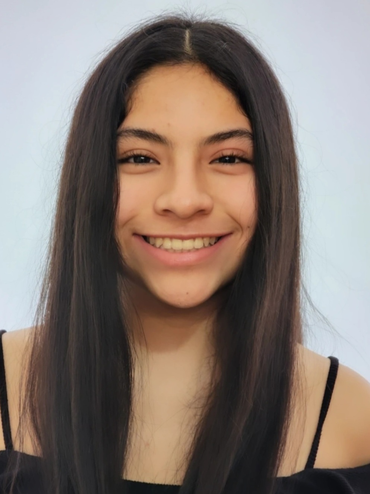

About Me
Born Camila Andrea Moreno Agüero on October 1, 2004 in Lima, Peru, I am a Spring/Summer 2023 IMD student at Algonquin College, delighted to be in her 1st semester. Before joining this two-year program, I was part of the Fall 2022 intake of the Drawing Foundations for Illustration and Animation one-year program.
I like to listen to music, go to the movies, go out with friends and stay connected with my family and friends in Peru through calls. Art is my biggest interest; things related to painting, drawing, sculpting, animation, digital design, photography, videography, literature, music, singing, dancing, and acting catch my eye the most.
"My heart might be broken, but I won't be broken down"
- Tomlinson, L. (2022). "Saturdays". On "Faith In The Future". BMG Rights Management.